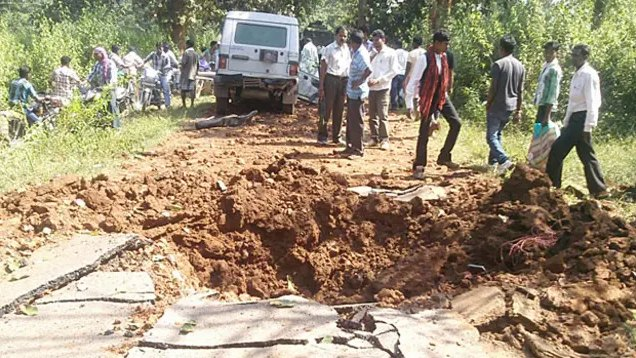

6 April 2010
Dantewada ambush
A CRPF party on an area-domination operation in the Chintalnar forest was ambushed at dawn. 76 personnel were killed, the deadliest attack on India's security forces by the Maoists, and it came during the government's Operation Green Hunt offensive. It is widely seen as the peak of Maoist strength.